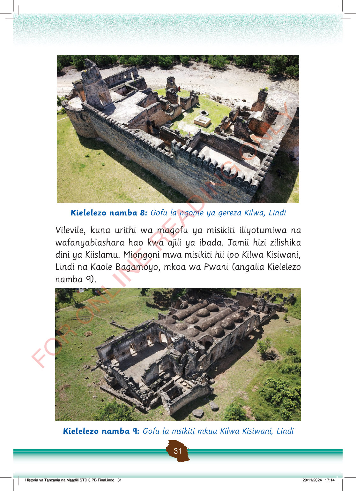

Magofu ya Ngome ya Gereza ya Kilwa, Lindi, yakiwa yamezungukwa na ukuta mkubwa. Ndani kuna sehemu wazi na kuta za zamani zilizobaki.
Kielelezo namba 8: Gofu la ngome ya gereza Kilwa, Lindi
Vilevile, kuna urithi wa magofu ya misikiti iliyotumiwa na wafanyabiashara hao kwa ajili ya ibada.
Jamii hizi zilishika dini ya Kiislamu.
Miongoni mwa misikiti hii ipo Kilwa Kisiwani, Lindi na Kaole Bagamoyo, mkoa wa Pwani (angalia Kielelezo namba 9).
Magofu ya Msikiti Mkuu wa Kilwa Kisiwani, Lindi. Paa la zamani lenye kuba nyingi na kuta zilizobaki linaonekana wazi.
Kielelezo namba 9: Gofu la msikiti mkuu Kilwa Kisiwani, Lindi